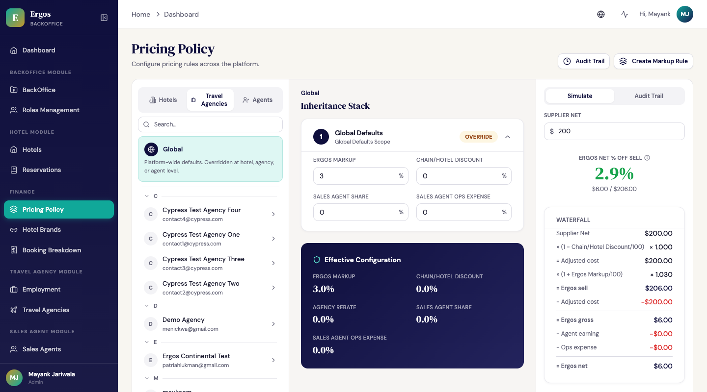
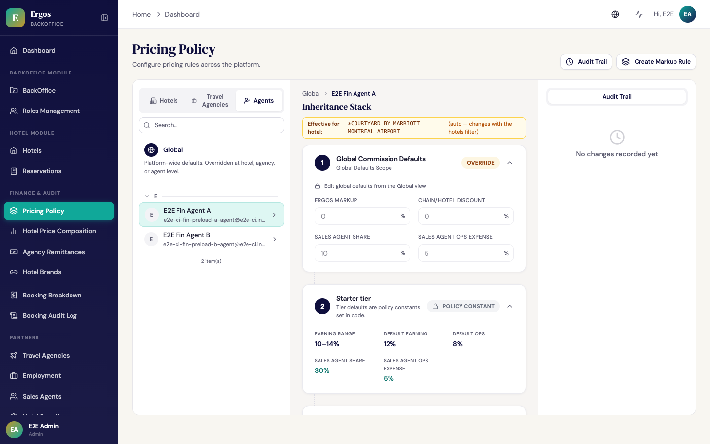
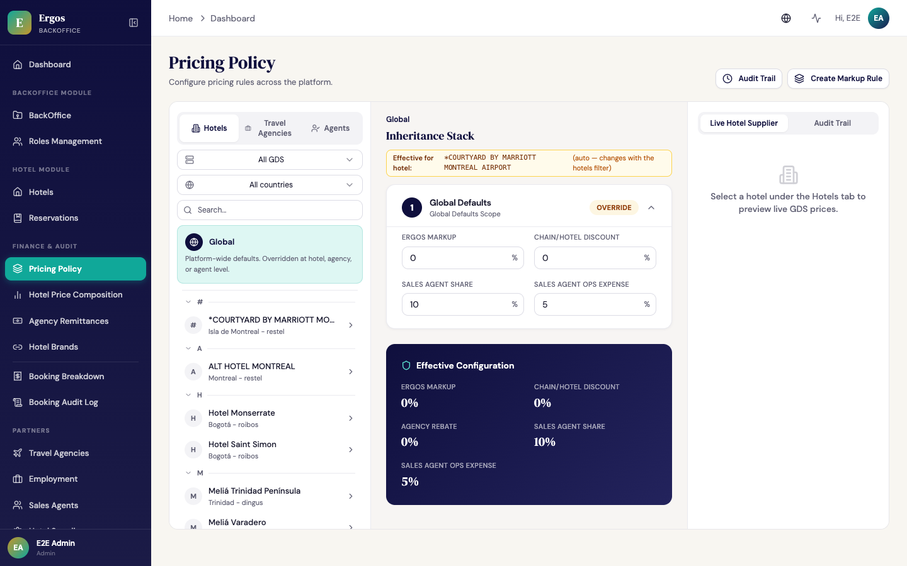
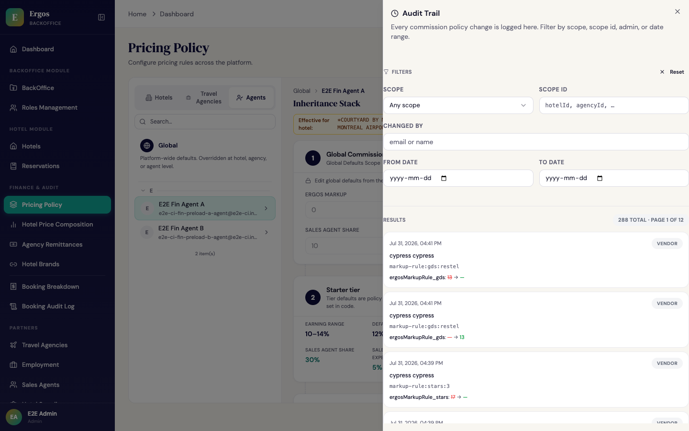

1. Welcome Start here
1. Bienvenida Empezar aquí
The Backoffice is the internal admin console where Ergos staff manage every aspect of the platform: the travel agencies that use Ergos, the sales agents who recruit and support them, the hotel inventory, every reservation, the pricing policy that controls commissions, and the audit trail that records every change.
El Backoffice es la consola interna de administración donde el personal de Ergos administra cada aspecto de la plataforma: las agencias de viajes que usan Ergos, los agentes comerciales que las reclutan y dan soporte, el inventario de hoteles, cada reserva, la política de precios que controla las comisiones, y el rastro de auditoría que registra cada cambio.
Who uses this app
Quién usa esta app
| Role | Rol | Sees / does | Ve / hace |
|---|---|---|---|
| Admin | Everything. Manages backoffice users, roles, pricing policy, hotel brands, vendor configuration, and runs migrations. Highest-privilege role.Todo. Administra usuarios de backoffice, roles, política de precios, marcas hoteleras, configuración de vendors y corre migraciones. Rol de máximo privilegio. | ||
| Ergos employee / Empleado de Ergos | Daily operations. Manages travel agencies, onboards sales agents, investigates reservations, downloads audit reports. Cannot change pricing policy.Operaciones diarias. Administra agencias de viajes, onboardea agentes comerciales, investiga reservas, descarga reportes de auditoría. No puede cambiar la política de precios. | ||
| Sales agent / Agente comercial | Read-only view of their own recruited agencies, their bookings, and their own commission earnings. (Sales agents may have a separate portal in the future.)Vista solo-lectura de sus propias agencias reclutadas, sus reservas y sus propias ganancias por comisión. (Los agentes comerciales podrían tener un portal separado en el futuro.) | ||
| Travel Agency (limited access) | Some agency owners get a restricted backoffice view to manage their agency profile, but the everyday booking work happens in the Agency App, not here.Algunos dueños de agencia obtienen una vista restringida de backoffice para administrar el perfil de su agencia, pero el trabajo diario de reservas ocurre en la App de la Agencia, no acá. |
2. Dashboard & navigation
2. Dashboard y navegación
When you log in, you land on the Dashboard. The left sidebar is your primary navigation; the modules visible to you depend on your role.
Cuando ingresás, aterrizás en el Dashboard. El panel izquierdo es tu navegación principal; los módulos visibles dependen de tu rol.
Sidebar layout
Estructura del panel
- Dashboard — at-a-glance metrics: today's bookings, monthly revenue, active agencies, top-performing sales agents.
- BackOffice Module — BackOffice users, Roles Management.
- Hotel Module — Hotels list, Reservations.
- Finance & Audit — Pricing Policy, Hotel Brands, Booking Breakdown, Booking Audit Log. Everything that controls or records the money flow lives here.
- Partners — Travel Agencies, Employment (employee invitations), Sales Agents, Hotel Suppliers. One umbrella for every party Ergos has a contractual + financial relationship with — distribution side, internal team, and supply side.
- Dashboard — métricas de un vistazo: reservas de hoy, ingresos mensuales, agencias activas, agentes comerciales destacados.
- Módulo BackOffice — Usuarios BackOffice, Administración de Roles.
- Módulo Hotel — Lista de Hoteles, Reservas.
- Finanzas & Auditoría — Política de Precios, Marcas Hoteleras, Desglose de Reservas, Log de Auditoría de Reservas. Todo lo que controla o registra el flujo del dinero vive acá.
- Socios (Partners) — Agencias de Viajes, Empleos (invitaciones a empleados), Agentes Comerciales, Proveedores Hoteleros (Hotel Suppliers). Un solo paraguas para cada parte con la que Ergos tiene una relación contractual y financiera — lado distribución, equipo interno y lado proveedor.
3. Backoffice users & roles
3. Usuarios de Backoffice y roles
Admin only Solo AdminThe BackOffice Users page lists every person who has access to the Backoffice. From here you can invite new staff, change roles, deactivate accounts, and review activity.
La página Usuarios BackOffice lista a cada persona que tiene acceso al Backoffice. Desde acá podés invitar nuevo personal, cambiar roles, desactivar cuentas y revisar actividad.
Adding a new backoffice user
Agregar un nuevo usuario de backoffice
- Click BackOffice → BackOffice in the sidebar to see the list.
- Click Add User (top right).
- Fill in: full name, email, phone, role (Admin / Ergos Employee / Sales Agent / Travel Agency).
- Click Save. The new user receives an invitation email with a link to set their password.
- Hacé clic en BackOffice → BackOffice en el panel para ver la lista.
- Hacé clic en Agregar Usuario (arriba a la derecha).
- Completá: nombre completo, correo, teléfono, rol (Admin / Empleado de Ergos / Agente Comercial / Agencia de Viajes).
- Hacé clic en Guardar. El nuevo usuario recibe un correo de invitación con un link para fijar su contraseña.
Editing a user's role
Editar el rol de un usuario
From the BackOffice Users list, click Edit Role next to any user. Select the new role from the dropdown and save. The change takes effect the next time the user signs in (their existing session continues with the old role until they re-authenticate).
Desde la lista de Usuarios BackOffice, hacé clic en Editar Rol al lado de cualquier usuario. Seleccioná el nuevo rol del dropdown y guardá. El cambio toma efecto la próxima vez que el usuario ingrese (su sesión actual continúa con el rol anterior hasta que se re-autentica).
Deactivating an account
Desactivar una cuenta
Toggle the Active switch in the row. Deactivated accounts can't sign in but their historical activity stays in audit logs. Re-activate by toggling the switch back on.
Conmutá el switch Activo en la fila. Las cuentas desactivadas no pueden ingresar pero su actividad histórica queda en los logs de auditoría. Reactivá conmutando el switch de vuelta a encendido.
4. Managing travel agencies
4. Administrar agencias de viajes
The Travel Agencies page is where Ergos onboards and administers every agency that uses the platform. Click the menu item in the sidebar (under Partners) to open the list.
La página Agencias de Viajes es donde Ergos onboardea y administra cada agencia que usa la plataforma. Hacé clic en el ítem del panel (bajo Socios) para abrir la lista.
Onboarding a new travel agency
Onboardear una nueva agencia de viajes
- Go to Travel Agencies → + Create.
- Fill in the agency profile: name, legal name, contact info, country, contracted GDS suppliers (Dingus / Hotetec / Restel / Roibos / Juniper).
- Set the defaultRebatePct if known — this is the percentage Ergos pays back to the agency on every booking. Edited later from the Pricing Policy → Travel Agencies tab.
- Set the defaultMarkupPct the agency will use by default when quoting customers (typical: 15%). Optional.
- Save. The agency is created in Pending status. Send the owner an invitation email from this screen.
- Andá a Agencias de Viajes → + Crear.
- Completá el perfil de la agencia: nombre, nombre legal, datos de contacto, país, proveedores GDS contratados (Dingus / Hotetec / Restel / Roibos / Juniper).
- Fijá el defaultRebatePct si lo sabés — es el porcentaje que Ergos devuelve a la agencia en cada reserva. Se edita después desde la pestaña Política de Precios → Agencias de Viajes.
- Fijá el defaultMarkupPct que usará la agencia por defecto al cotizar (típico: 15%). Opcional.
- Guardá. La agencia se crea en estado Pendiente. Envialé al dueño un correo de invitación desde esta pantalla.
The Hotel Commission Overrides tab
La pestaña Hotel Commission Overrides
When you open a specific agency's detail page, one of the tabs is Hotel Commission Overrides. This is where you set per-(agency, hotel) rebate overrides — useful when an agency negotiates a special rate at one particular property without changing their default rebate. Click Add override, search for the hotel, enter the override percentage, and save.
Cuando abrís la página de detalle de una agencia específica, una de las pestañas es Hotel Commission Overrides. Acá fijás overrides de rebate por (agencia, hotel) — útil cuando una agencia negocia una tarifa especial en una propiedad particular sin cambiar su rebate por defecto. Hacé clic en Agregar override, buscá el hotel, ingresá el porcentaje del override y guardá.

5. Managing sales agents & tiers
5. Administrar agentes comerciales y tiers
Sales agents are the Ergos team members who recruit and support travel agencies. Each agent belongs to one of four tiers (Starter, Growth, Elite, Strategic) which controls their commission percentage range.
Los agentes comerciales son los miembros del equipo de Ergos que reclutan y dan soporte a las agencias de viajes. Cada agente pertenece a uno de cuatro tiers (Starter, Growth, Elite, Strategic) que controla el rango de su porcentaje de comisión.
The 4 tiers
Los 4 tiers
| Tier | Earning range | Rango de earning | Default earningPct | Default ops |
|---|---|---|---|---|
| Starter | 10–14% | 12% | 8% | |
| Growth | 15–20% | 18% | 7% | |
| Elite | 21–26% | 24% | 6% | |
| Strategic | 27–32% | 30% | 5% |
Promoting an agent to a higher tier
Promover un agente a un tier más alto
- Go to Sales Agents in the sidebar.
- Find the agent and click Edit.
- Change the Commission Tier dropdown to the new tier.
- The Earning Percentage and Operational Expense fields auto-fill with the new tier's defaults; adjust if needed (must stay within the tier's range).
- Save. The change applies to all future bookings only — past bookings keep their original commission snapshot.
- Andá a Agentes Comerciales en el panel.
- Encontrá al agente y hacé clic en Editar.
- Cambiá el dropdown Tier de Comisión al nuevo tier.
- Los campos Porcentaje de Earning y Gasto Operacional se autocompletan con los defaults del nuevo tier; ajustá si es necesario (deben quedar dentro del rango del tier).
- Guardá. El cambio aplica solo a reservas futuras — las reservas pasadas mantienen su instantánea de comisión original.

Per-(agent, hotel) overrides
Overrides por (agente, hotel)
For special relationships (e.g., an agent who personally handles support for one chain), you can set a per-hotel earning percentage or ops cost that beats the tier default. Set this from Pricing Policy → Agents tab → select agent → Layer 5.
Para relaciones especiales (ej. un agente que maneja personalmente el soporte de una cadena), podés fijar un earning o costo de ops por hotel que le gane al default del tier. Fijá esto desde Política de Precios → pestaña Agents → seleccionar agente → Capa 5.
6. Hotel catalog
6. Catálogo de hoteles
The Hotels page shows the entire hotel catalog Ergos has synced from its GDS suppliers. There are over 100,000 hotels across all four GDS — the list is paginated and filterable.
La página Hoteles muestra el catálogo completo de hoteles que Ergos sincronizó desde sus proveedores GDS. Hay más de 100,000 hoteles entre los cuatro GDS — la lista es paginada y filtrable.
Searching and filtering
Buscar y filtrar
- Search by name, city, or country in the search box.
- Filter by GDS source (Dingus / Hotetec / Restel / Roibos / Juniper).
- Filter by star rating.
- Filter by chain (Meliá, Iberostar, Domina, etc.).
- Pagination is lazy — the next 200 hotels load automatically as you scroll near the bottom of the list.
- Buscá por nombre, ciudad o país en la caja de búsqueda.
- Filtrá por fuente GDS (Dingus / Hotetec / Restel / Roibos / Juniper).
- Filtrá por calificación de estrellas.
- Filtrá por cadena (Meliá, Iberostar, Domina, etc.).
- La paginación es lazy — los próximos 200 hoteles se cargan automáticamente al hacer scroll cerca del final de la lista.
What you can edit per hotel
Qué podés editar por hotel
Hotels come from the supplier feeds, so the core data (name, address, photos, room types) is read-only — those changes have to happen at the supplier. What Ergos staff can edit per hotel:
Los hoteles vienen de los feeds del proveedor, así que los datos centrales (nombre, dirección, fotos, tipos de habitación) son solo lectura — esos cambios tienen que hacerse en el proveedor. Lo que el personal de Ergos sí puede editar por hotel:
- Chain link — manually associate a hotel with a chain in the registry (when auto-link missed it).
- baseCommission — per-hotel Ergos markup override (rarely used; prefer markup_rules for groups of hotels).
- chainDiscountPct — per-hotel chain discount override.
- Vínculo con cadena — asociar manualmente un hotel con una cadena del registro (cuando el auto-link no lo detectó).
- baseCommission — override del markup de Ergos por hotel (raramente usado; preferí markup_rules para grupos de hoteles).
- chainDiscountPct — override del descuento de cadena por hotel.
7. Reservations & bookings
7. Reservas
The Reservations page is your forensic tool for any booking-related question. Every reservation made through any agency is here, with its full audit trail.
La página Reservas es tu herramienta forense para cualquier pregunta relacionada con reservas. Cada reserva hecha a través de cualquier agencia está acá, con su rastro de auditoría completo.
Finding a specific booking
Encontrar una reserva específica
Search by locator, guest name, hotel, agency name, or agent. Filter by date range and status (Confirmed / Pending / Cancelled / Completed). Click any row to open the booking detail page.
Buscá por locator, nombre del huésped, hotel, nombre de la agencia o agente. Filtrá por rango de fechas y estado (Confirmada / Pendiente / Cancelada / Completada). Hacé clic en cualquier fila para abrir la página de detalle.
Booking detail — what you can see
Detalle de reserva — qué podés ver
- Guest info — full names of every guest, contact details.
- Price distribution — supplier net, Ergos sell, agency markup, customer price; the whole waterfall.
- Commission Snapshot — the frozen-at-booking-time commission policy (baseCommission, chainDiscountPct, rebatePct, earningPct, opsExpense). Used for dispute resolution.
- Supplier confirmation — the code returned by the GDS, plus the timestamp.
- Audit timeline — every status change with timestamp and actor.
- Datos del huésped — nombres completos de cada huésped, datos de contacto.
- Distribución de precio — supplier net, Ergos sell, markup de agencia, precio cliente; toda la cascada.
- Commission Snapshot — la política de comisión congelada al momento de la reserva (baseCommission, chainDiscountPct, rebatePct, earningPct, opsExpense). Usada para resolver disputas.
- Confirmación del proveedor — el código devuelto por el GDS, más el timestamp.
- Timeline de auditoría — cada cambio de estado con timestamp y actor.
8. Pricing Policy /pricing-policy
8. Política de Precios /pricing-policy
The Pricing Policy page is where Ergos sets the commission rules that determine what each booking earns the platform, the agency, and the sales agent. It uses a 5-layer cascade — see the technical reference Pricing Policy & Hotel Brands — How It Works for the full math. This section covers the everyday user actions.
La página de Política de Precios es donde Ergos fija las reglas de comisión que determinan lo que cada reserva le da a la plataforma, a la agencia y al agente comercial. Usa una cascada de 5 capas — ver la referencia técnica Pricing Policy & Hotel Brands — How It Works para la matemática completa. Esta sección cubre las acciones diarias del usuario.

The three scope tabs
Las tres pestañas de scope
- Hotels — set per-hotel commission overrides. The most-common adjustment.
- Travel Agencies — set per-agency default rebate. Affects every booking that agency makes.
- Agents — set per-agent earning overrides on specific hotels.
- Hoteles — fijar overrides de comisión por hotel. El ajuste más común.
- Agencias de Viajes — fijar el rebate por defecto por agencia. Afecta cada reserva que hace esa agencia.
- Agentes — fijar overrides de earning del agente en hoteles específicos.
Setting a new markup rule for a whole GDS (e.g., all Restel hotels)
Fijar una nueva regla de markup para todo un GDS (ej. todos los hoteles Restel)
- From the Pricing Policy page, click Create Markup Rule (top right).
- In the Scope selector, choose GDS.
- In the vendor dropdown, select Restel.
- Set the Ergos markup percentage (e.g., 5).
- Enter a reason (recorded in the audit log).
- Type
APPLYin the confirmation field and click Save Rule.
- Desde la página de Política de Precios, hacé clic en Create Markup Rule (arriba a la derecha).
- En el selector de Scope, elegí GDS.
- En el dropdown de vendor, seleccioná Restel.
- Fijá el porcentaje de markup de Ergos (ej. 5).
- Ingresá una razón (se registra en el log de auditoría).
- Escribí
APPLYen el campo de confirmación y hacé clic en Save Rule.

9. Hotel Brands /hotel-brands
9. Marcas Hoteleras /hotel-brands
The Hotel Brands page is the chain registry — where Ergos records the chains it has contracts with (Meliá, Iberostar, Domina, Gran Caribe, HTL Gaviota, etc.), the negotiated discount per chain, and which hotels belong to each chain.
La página Marcas Hoteleras es el registro de cadenas — donde Ergos registra las cadenas con las que tiene contratos (Meliá, Iberostar, Domina, Gran Caribe, HTL Gaviota, etc.), el descuento negociado por cadena y qué hoteles pertenecen a cada una.

The 4 actions per chain card
Las 4 acciones por tarjeta de cadena
- Edit Chain — change name, code, discount %, contract status, effective/expiry dates, name match patterns, applicable vendors.
- Manage Hotels — open the dialog to link or unlink specific hotels. The "Currently linked" section shows existing members; the "Add hotels" section lets you search and select more.
- Apply discount to linked hotels — pushes the chain's
chainDiscountPctto every linked hotel's commission record. Required after any discount change. Writes one audit entry per affected hotel. - Delete Chain — removes the chain. Linked hotels are unlinked but not deleted.
- Editar Cadena — cambiar nombre, código, % de descuento, estado del contrato, fechas effective/expiry, patrones de coincidencia de nombre, vendors aplicables.
- Administrar Hoteles — abrir el diálogo para vincular o desvincular hoteles específicos. La sección "Currently linked" muestra los miembros existentes; la sección "Add hotels" te permite buscar y seleccionar más.
- Aplicar descuento a hoteles vinculados — empuja el
chainDiscountPctde la cadena a cada registro de comisión del hotel vinculado. Requerido después de cualquier cambio de descuento. Escribe una entrada de auditoría por hotel afectado. - Eliminar Cadena — quita la cadena. Los hoteles vinculados se desvinculan pero no se eliminan.
Onboarding a new chain
Onboardear una nueva cadena
- Click + Add Chain (top right).
- Fill in name, code, hasDiscount ON, chainDiscountPct (e.g., 15 for 15% off), contractStatus = signed, effective date today.
- Save. The new chain appears with "0 hotels".
- Click Manage Hotels, search for matching hotels, click each to select, click Link N hotel(s).
- Back on the chain card, click ⚡ Apply discount to linked hotels to push the discount to every linked hotel.
- Hacé clic en + Add Chain (arriba a la derecha).
- Completá nombre, código, hasDiscount ON, chainDiscountPct (ej. 15 para 15% off), contractStatus = signed, fecha effective hoy.
- Guardá. La nueva cadena aparece con "0 hoteles".
- Hacé clic en Administrar Hoteles, buscá los hoteles que coinciden, hacé clic en cada uno para seleccionar, hacé clic en Link N hotel(s).
- De vuelta en la tarjeta de la cadena, hacé clic en ⚡ Apply discount to linked hotels para empujar el descuento a cada hotel vinculado.
10. Finance & booking breakdown
10. Finanzas y desglose de reservas
The Booking Breakdown page (under Finance in the sidebar) is the per-booking financial waterfall: GDS net → adjusted cost → Ergos sell → Ergos gross → payouts → Ergos net. For any single booking, you can see exactly where every dollar went.
La página Desglose de Reservas (bajo Finanzas en el panel) es la cascada financiera por reserva: GDS net → costo ajustado → Ergos sell → Ergos gross → payouts → Ergos net. Para una sola reserva, podés ver exactamente adónde fue cada dólar.
What it shows
Qué muestra
- Per-booking detail — type or paste a booking locator to see the full waterfall.
- Aggregated reporting — pick a date range to see monthly totals across all bookings.
- Per-agency revenue — group by travel agency to see who's bringing in the most volume.
- Per-agent commission — group by sales agent to see commission paid.
- Detalle por reserva — escribí o pegá un locator de reserva para ver la cascada completa.
- Reporting agregado — elegí un rango de fechas para ver totales mensuales en todas las reservas.
- Ingreso por agencia — agrupá por agencia de viajes para ver quién trae más volumen.
- Comisión por agente — agrupá por agente comercial para ver la comisión pagada.
11. Audit logs & compliance
11. Registros de auditoría y cumplimiento
There are two audit logs in the Backoffice:
Hay dos logs de auditoría en el Backoffice:
- Pricing Policy audit trail — accessible from Pricing Policy → Audit Trail button. Every commission policy change.
- Booking Audit Log — accessible from the Finance & Audit menu in the sidebar. Every booking status transition + every modification.
- Rastro de auditoría de Política de Precios — accesible desde el botón Audit Trail en Política de Precios. Cada cambio en la política de comisiones.
- Log de Auditoría de Reservas — accesible desde el menú Finanzas & Auditoría en el panel. Cada transición de estado + cada modificación de reservas.

Quarterly compliance review
Revisión de cumplimiento trimestral
- Open Pricing Policy → click Audit Trail in the header.
- Set the date filter to the quarter you're reviewing.
- (Optional) Filter by scope =
hotelto see only hotel-level changes, or by Changed by = an admin's email. - Page through the results (25 per page). Each entry shows: timestamp, scope, who, what field, old → new, and reason text (when supplied).
- Export-ready data is also available via the
GET /auditAPI endpoint if you need CSV/JSON.
- Abrí Política de Precios → hacé clic en Audit Trail en el encabezado.
- Fijá el filtro de fechas al trimestre que revisás.
- (Opcional) Filtrá por scope =
hotelpara ver solo cambios a nivel hotel, o por Changed by = el correo de un admin. - Recorré los resultados (25 por página). Cada entrada muestra: timestamp, scope, quién, qué campo, old → new y el texto de razón (cuando se proporciona).
- Datos listos para exportar también están disponibles vía el endpoint API
GET /auditsi necesitás CSV/JSON.
12. Hotel Suppliers /vendor-management
12. Proveedores Hoteleros /vendor-management
Admin only Solo AdminThe Hotel Suppliers page (under Partners) is where Ergos admins control which GDS suppliers are active, configure their API credentials (read-only display; rotation happens through ops), and view per-vendor health metrics. The underlying URL is /vendor-management — the "Vendor Management" name from earlier versions still appears in the URL and in some support docs.
La página Proveedores Hoteleros (bajo Socios) es donde los admins de Ergos controlan qué proveedores GDS están activos, configuran sus credenciales de API (visualización solo lectura; la rotación ocurre vía ops) y ven métricas de salud por vendor. La URL subyacente es /vendor-management — el nombre "Vendor Management" de versiones anteriores sigue apareciendo en la URL y en algunos docs de soporte.
What you can do here
Qué podés hacer acá
- See the status of each vendor (active / paused / failing).
- View when each vendor's catalog was last synced.
- Enable/disable a vendor globally (e.g., pause Restel during maintenance).
- See the per-vendor sub-vendor codes used for chain auto-linking.
- Ver el estado de cada vendor (activo / pausado / fallando).
- Ver cuándo se sincronizó por última vez el catálogo de cada vendor.
- Habilitar/deshabilitar un vendor globalmente (ej. pausar Restel durante mantenimiento).
- Ver los códigos de sub-vendor por vendor usados para el auto-linking de cadenas.
13. Common tasks & troubleshooting
13. Tareas comunes y solución
An agency's bookings stopped going through
Las reservas de una agencia dejaron de pasar
- Check the agency's account status (Travel Agencies → search by name). Active?
- Check Hotel Suppliers (Partners → Hotel Suppliers) — is the GDS they're booking from active?
- Open a recent failed booking from Reservations; the supplier error message tells you the cause.
- Revisá el estado de la cuenta de la agencia (Agencias de Viajes → buscar por nombre). ¿Activa?
- Revisá Administración de Vendors — ¿el GDS desde el que reservan está activo?
- Abrí una reserva fallida reciente desde Reservas; el mensaje de error del proveedor te dice la causa.
A sales agent's commission seems wrong
La comisión de un agente comercial parece incorrecta
- Open one of their recent bookings from Reservations. Look at the Commission Snapshot's earningPct.
- Confirm their current tier is correct (Sales Agents → Edit).
- Check if there's a per-(agent, hotel) override active that's lowering the rate.
- Cross-reference with the audit log to see if their tier was changed recently.
- Abrí una de sus reservas recientes desde Reservas. Mirá el earningPct del Commission Snapshot.
- Confirmá que su tier actual sea el correcto (Agentes Comerciales → Editar).
- Revisá si hay un override por (agente, hotel) activo que esté bajando la tasa.
- Cruzá con el log de auditoría para ver si su tier se cambió recientemente.
A chain's discount didn't apply to all its hotels
El descuento de una cadena no se aplicó a todos sus hoteles
After editing a chain's discount %, you must explicitly click ⚡ Apply discount to linked hotels on the chain card. The save alone updates the chain record; the apply action pushes the new value to every linked hotel. Read the audit log entries that result — they confirm how many hotels were updated.
Después de editar el % de descuento de una cadena, tenés que hacer clic explícitamente en ⚡ Apply discount to linked hotels en la tarjeta de la cadena. El save solo actualiza el registro de la cadena; la acción apply empuja el nuevo valor a cada hotel vinculado. Leé las entradas de auditoría que resultan — confirman cuántos hoteles se actualizaron.
I made a mistake on a Create Markup Rule and need to undo it
Me equivoqué en un Create Markup Rule y necesito deshacer
Open the markup rule directly via the API or, in the UI, create a NEW rule with the corrected value targeting the same scope+identifier — it overwrites the old one. The audit log preserves the history. If the rule was applied to many hotels with downstream commission effects, contact the engineering team to assist.
Abrí la markup rule directamente vía API o, en la UI, creá una NUEVA regla con el valor corregido apuntando al mismo scope+identifier — sobrescribe la anterior. El log de auditoría preserva la historia. Si la regla se aplicó a muchos hoteles con efectos downstream sobre comisiones, contactá al equipo de ingeniería para que te asistan.
Need more help?
¿Necesitás más ayuda?
For day-to-day operational questions, contact the Ergos engineering team via internal channels. For the technical reference on the pricing-policy cascade, the formulas, the data model, and the API endpoints, see Pricing Policy & Hotel Brands — How It Works.
Para preguntas operacionales del día a día, contactá al equipo de ingeniería de Ergos por los canales internos. Para la referencia técnica sobre la cascada de política de precios, las fórmulas, el modelo de datos y los endpoints de API, mirá Pricing Policy & Hotel Brands — How It Works.